Overview
Case variables are variables that are created inside a process and stored exclusively for each case. They are automatically created when a new case is initiated, and can be used in any of the objects in a process. Case variables can be defined in the process designer, and can then be used to populate fields in Dynaforms as well as in output documents, triggers and email templates.
Defining Variables
| Warning: Before creating a variable, read the rules in the Naming Variables section to name it properly. |
To define case variables, open the project where case variables will be used, and in the Process Objects toolbox click on the + icon next to the Variables option.

Fill out information about the new variable in the modal window that opens:
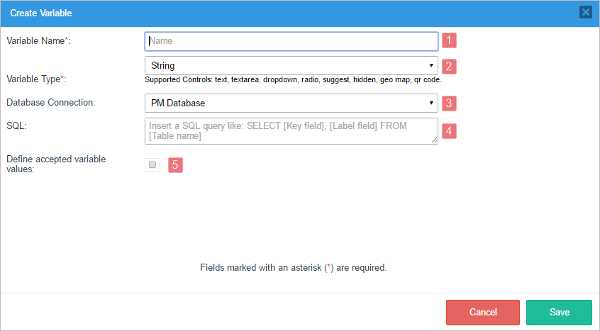
| Warning: ProcessMaker does NOT support variables created with characters from Arabic, Hindi, Japanese or other languages that do not use the Latin alphabet. |
Variable Name: Required. Variables must have a unique name between 2 and 64 characters long without spaces, which ProcessMaker will use to identify the variable. ProcessMaker designers can use the variable name in Dynaform fields, emails, output document, templates, trigger code, etc. Normal PHP variable naming rules apply, so the name is case sensitive and must start with a letter or underscore, and can only contain characters that are letters, numbers and underscores. Symbols and spaces are not allowed. Consider the use of self-descriptive names when defining variable names as a good practice.
All variables are stored in the MEDIUMTEXT field of wf_
.APPLICATION.APP_DATA in the database, which holds a maximum of 16,777,213 bytes. The maximum number of characters in a string is determined by the size of that field, but can also be limited by the Max. Length property of Textbox controls in Dynaforms and by the post_max_size setting in the php.ini configuration file.
If trying to add a variable that doesn't have a valid name, the following error message will appear:
Note: A variable name must match the regular expression:
^[a-zA-Z_\x7f-\xff][a-zA-Z0-9_\x7f-\xff]*- Variable Type: Required. Select the data type of the new variable. The data types supported by ProcessMaker version 3.2 are:
- String: Accepts characters of any type, including letters, numbers, symbols and spaces. String variables can be used to populate text fields, textareas, dropdowns, radio buttons, suggest boxes, hidden fields, geo map controls and QR code fields. For example, a string variable can be used to store a description:
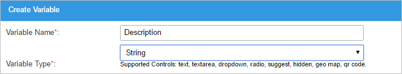
- Integer: Accepts only whole numbers between -2147483648 and 2147483647. The whole number can be positive, negative, or zero. It does not accept fractions. Integers can be used to populate text fields, textareas, dropdowns, radio buttons, suggest boxes and hidden fields.

- Float: A floating-point variable accepts real numbers with a decimal point, so it can accept fractions. It is a 4 byte floating-point number between -3.402823466E+38 and 3.402823466E+38. Numbers with 9 or more decimals will be rounded to the nearest integer. For instance, if the number 0.999999999 is entered, it will be rounded to 1.0000000. A float variable can be used by text fields, textareas, dropdowns, radio buttons, suggest boxes and hidden fields.

- Boolean: Accepts only values of TRUE or FALSE to represent boolean logic. Any other values will be converted to TRUE or FALSE. All numbers except 0 (zero) and all strings except empty strings are considered TRUE. A boolean variable can be used by checkboxes, dropdowns, hidden fields and radio buttons that only allow a binary choice (such as Yes/No, On/Off or Approve/Disapprove).
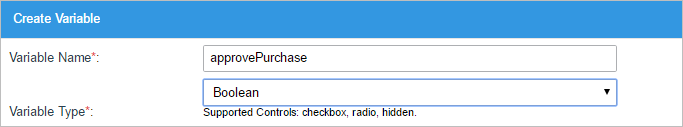
- Datetime: Stores a date or datetime in the format "
YYYY-MM-DD" or "YYYY-MM-DD HH:MM:SS". For example, the last second of the year 2015 is: "2015-12-31 23:59:59". A datetime variable can be used by datetime and hidden fields.
- Grid: This type of variable is used to store grid controls in Dynaforms. ProcessMaker stores grids as a numbered array of associative arrays, which is the same format used when storing the results of database queries, so grids can be populated with a database query.

Note: This type of variable can also be related to the subform's Grid Store property.
- Array: This type of variable stores a collection of values. The values can be of different data types. Array variables can only be used by checkgroup controls.

- File: This type of variable stores the file(s) selected in a file control.

An input document can also be associated with a file variable. When defining an input document, a file variable can be selected to hold its contents, so that the input document can be accessed through a file control in a Dynaform or as a variable in a trigger. Define the maximum file size, the destination path and allowed file extensions of the uploaded files in the input document. The file variable can then be associated with an existing input document.
To use a file variable, first create an input document. Then, create the file variable and associate it with the existing input document. Finally, create a Dynaform with a File control and associate the file variable with that File control. When a file variable associated with an input document is used in a File control, the properties in the control will be disabled because those properties have already been set in the Input Document properties. - Multiple File: This type of variable is used to store multiple files selected by a multiple file uploader control and it is supported only by this control.

-
Object: This type of variable is used to store an object, and is included in the object picker window like any other variable, but it is only supported in triggers, templates and conditions (such as gateways and step conditions). It is NOT supported in Dynaforms or report tables and cannot be assigned to any kind of control.

The data stored in this type of variable can be used in subsequent triggers by accessing the object properties using PHP object standard syntax.
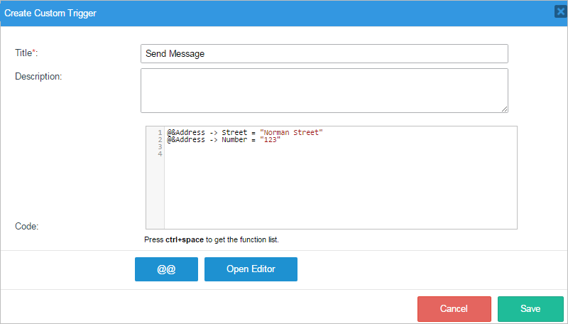
- String: Accepts characters of any type, including letters, numbers, symbols and spaces. String variables can be used to populate text fields, textareas, dropdowns, radio buttons, suggest boxes, hidden fields, geo map controls and QR code fields. For example, a string variable can be used to store a description:
Database Connection: This field is set to "PM Database" by default, which is the wf_WORKSPACE database for the current workspace named wf_workflow. If there are other database connections in the project, they can be selected in the dropdown menu.
SQL: A database query can be used to set the initial value of a variable associated with a text, textarea or hidden field, or to populate the list of options in dropdown boxes, suggest boxes, radio buttons or checkgroups.
Enter an SQL
SELECTstatement to populate the variable. Note that SELECT statements are the default for controls associated with the variable, but can be modified in the definition of each control. Do NOT include the name of the database in the query, since the query will be executed in the selected database connection.The SQL query is executed when a Dynaform is displayed that contains a control associated with the variable. If the SQL query contains a reference to an independent field (
@@fieldIdor@#fieldId), then it will be executed every time the value of the independent field is changed by the user.If populating a text, textarea or hidden field, then the control will be set to the value in the first field in the first record returned by the database query. If populating the list of options in a dropdown box, suggest box, radio button, or checkgroup, then the first field will be the key and the second field will be the label of each option. These options from the SQL query will be added to the list after the fixed options.
Note: If querying a MySQL database, remember that table and field names are case sensitive in Linux/UNIX systems, but case insensitive in Windows systems (although this can be changed with the lower_case_table_names system setting). For portability of processes between Windows and Linux/UNIX servers, it is recommended to use table and field names in UPPERCASE when querying ProcessMaker databases.
Define Accepted Variable Values. A list of accepted options can be added to string, integer, float, boolean and array variables. These options will be displayed to the user when the variable is associated with a dropdown box, radio button, suggest box, or a checkgroup in a Dynaform. If this option is checked, a new section will be displayed below where options can be added with key (value) and label pairs. These options will be added first to the list, before any options added by the SQL query. Note that this is the default list of options, which can be modified in the definition of each control associated with the variable.

- a. Key. Required. The key (value) must be unique for each option since it acts as a unique identifier. It may not contain any spaces. Note that the keys are stored as strings, so "3.10" is not the same key as "3.1".
- b. Label. The label is the text displayed to users when the option is shown in a Dynaform.
- c. Create. Click on this button to add a new option to the list.
- d. List of the options already added to the variable. In this list, the key (value) of the option and its label are shown.
The variable values in this list can be dragged and dropped to modify the order.

- e. Edit. Click on this button to edit the key or the value of the variable option.
- f. Delete. Click on this button to delete the variable option.
- g. Pagination Control. Use this control to navigate through the pages of options. Each page lists up to 5 options.
Boolean variables include the option to configure the label of the TRUE and FALSE keys. The label of each of these keys can be configured. Boolean variables can only be used with dropdown box, radio button and checkbox controls in Dynaforms.
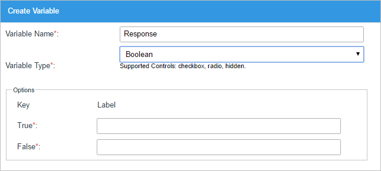
After filling out the information about the new variable, click on Save to add it to the list of available variables, or Cancel to discard any changes.
Note: All variables of a case are stored in the MEDIUMTEXT field in thewf_<WORKSPACE>.APPLICATION.APP_DATA database, which holds a maximum of 16,777,213 bytes. The maximum number of characters in a string is determined by the size of that field, but can also be limited by the Size property of text controls in Dynaforms and by the post_max_size setting in the php.ini configuration file.
Naming Variables
Before creating a variable, read the following rules to avoid conflicts later:
- Variable names must match the regular expression: ^[a-zA-Z_\x7f-\xff][a-zA-Z0-9_\x7f-\xff]*
- Similar variable names might have conflicts when moving the data to a report table.
- Use underscores to words with characters entirely in lower or uppercase, eg: "my_variable" or "MY_VARIABLE_NAME1".
Do NOT use camel case or '_' characters to differentiate similarly-named variables. As of ProcessMaker 3.2.2, if a variable, such as "my_variable_name", already exists and a new variable, such as "my_variable____name", "MY__VARIABLE_NAME", "MY_variable_Name", "MY_Variable_NAME", "MY_VARIABLE_NAME", is being created, an error dialog will be displayed.

- Do NOT mix camel case with underscores, e.g. myVariable_name.
- Do NOT name a variable with "_label" at the end, since variables are automatically created in ProcessMaker using this appendix in their name. For example a variable named "MyVariable" will also include a "MyVariable_label", which stores the text of the field. For more information, read the _label Variables section.
To know more about variable restrictions, see naming variables best practices.
Supported Variables
Depending on your version of ProcessMaker there are variables that are not supported in certain type of controls. To see what type of variables can be used by which controls, read the line below the Variable Type field.

The table below explains which variables are supported by each control in ProcessMaker version 3.2 and later.
| String | Integer | Float | Boolean | Datetime | Grid | Array | File | Multiple File | Object | |
| Text | ||||||||||
| Textarea | ||||||||||
| Dropdown | ||||||||||
| Checkbox | ||||||||||
| Checkgroup | ||||||||||
| Radio | ||||||||||
| Datetime | ||||||||||
| Suggest | ||||||||||
| Hidden | ||||||||||
| File | ||||||||||
| Multiple File | ||||||||||
| Grid | ||||||||||
| Geomap | ||||||||||
| QRCode |
_label Variables
When a case variable is created, a second variable with a name based on the name of the case variable and the suffix _label is automatically created. For instance, if the new variable is named "phone", the second variable will be named "phone_label".
Warning: Avoid creating variables with a "_label" suffix in their name, it may lead to possible conflicts with variables created by the ProcessMaker application.
A _label variable is used to store the label of the variable stored in the @@variable related to a Dynaform control. For example: for a dropdown, the label of the selected option is saved as a variable with the same name as the case variable assigned to the dropdown, but with a "_label" suffix. If a dropdown box is named "MyDropdown", then the value of the selected option would be stored in the case variable @@MyDropdown, and the label of the selected option would be stored in the @@MyDropdown_label variable.
In the case of textboxes, textareas or suggest boxes, the same value typed in by the user is stored in the case variable, as well as in the _label variable.
The _label variable values are stored in the wf_<WORKSPACE>.APPLICATION.APP_DATA field in the ProcessMaker database.
Managing Variables
To manage the list of variables and create new ones, click on the Variables option in the main toolbox.
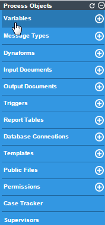
A list of variables will appear, along with options to add new variables and edit or delete the existing variables.
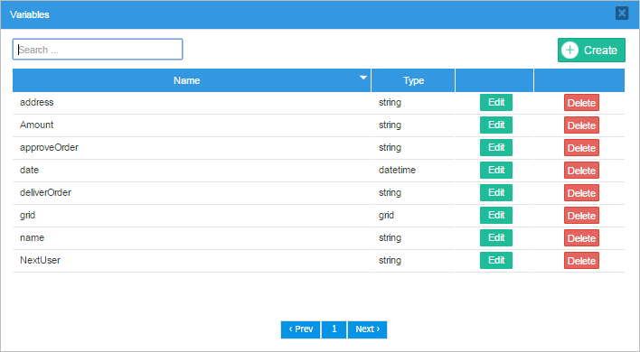
- Name: This column lists the name of the variables. By default, the variables are listed by their names in ascending alphabetical order. Click on the down triangle icon in the column header to switch to descending alphabetical order.
- Type: This column lists the data type of the variable.
- Edit: Click on this button to edit the variable's name or its type.
- Delete: Click on this button to delete the variable. When the confirmation message appears, click on Yes to delete the variable. Variables that are already being used to populate a Dynaform field can not be deleted. First, they have to be removed from the Dynaform before deleting them. Note that ProcessMaker doesn't check whether a variable is used in trigger code before deleting it.
The variables are listed 10 at a time. To see the next page, click on >; and to see the previous page, click on <. To see other pages of variables, click on the page's number in the pagination control below the list.
To filter the list of variables, enter text in the search box in the upper left-hand corner. The search is case insensitive in the variable names or in their types.
Adding Variables in a Dynaform
After creating variables, they can be associated with a control field in a Dynaform. To learn how to associate variables with fields in a DynaForm, read this documentation.
Warning: Assigning the same variable to different controls in different Dynaforms may result in unexpected behaviors. For example, if a variable was first assigned to a dropdown and then to a textbox the label might change, as shown in the image below.

The variable value is "US" and its _label variable is "United States" in the dropdown of a first Dynaform. Once the case is routed to a second Dynaform, when the variable is assigned to a textbox, only the variable value ("US") will be displayed in the textbox. Once this textbox is submitted, the _label variable will change from "United States" to "US", because a textbox stores the same value in the variable value and its _label.
Even though some combinations might seem safe, it is not recommended to use the same variable with multiple control types.
Creating Variables Inside the Dynaform Designer
Variables can also be created inside the Dynaform designer. When dragging and dropping a control, a new window will automatically appear; the Create/Select window, which has been designed to add functionality and behavior to the variables.

This new window will have two radio buttons offering two options: Create variable (creates a variable directly from this window) or Select variable (selects an existing process variable).

The Create variable option allows the immediate creation of a variable. First, a variable name is created; in this example, the variable will be "name".
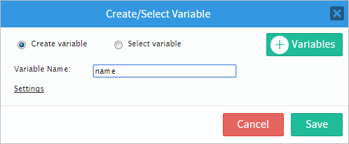
Click the Settings option to display more options.

The settings available for the creation of variables are the following:

The Type setting is a dropdown menu that allows the user to choose the type of variable that will be used. The options in the Type dropdown menu depend on the control chosen. If the control is a text control (like in the example below), the types of variable available will be "String", "Float" and "Integer". Try adding a Datetime control; the only type of variable available will be "datetime".

The Database Connection setting displays the connections already established with a database, or creates a new connection if one has not already been set. Read more about database connection in this section
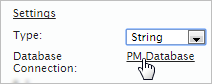
The Sql setting adds a query to give more functionality to the control. To add an SQL query, click on the underlined ellipsis as seen in the image. For more information read this section

An SQL Editor window will open where queries can be added.

Finally, the Options setting shows, edits and/or adds options to the control that may be related to a variable or not. Check this section for more information.
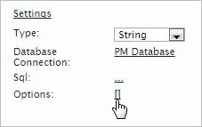
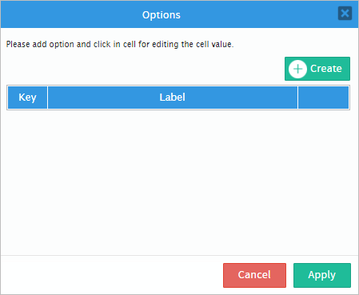
To add an existing variable to the control, simply click on the Select variable radio button.
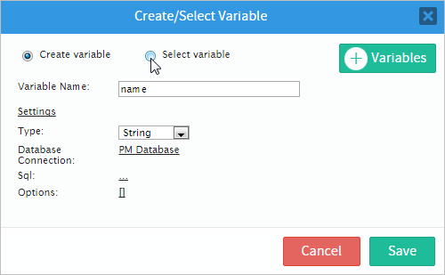
All process variables will be displayed, and one of them can be added to the control.